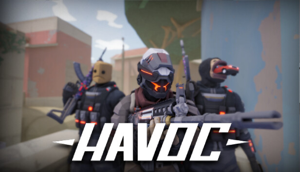

Аналіз останнього оновлення 16361846: що нового в геймплеї?
Нещодавнє оновлення гри під номером 16361846 принесло чимало змін, які суттєво вплинули на ігрову мету. Ми розібрали ключові моменти, щоб ви були готові до нових викликів.
Додання ботів
У гру додали ботів, кіли за них не даються і боти можуть проходити скрізь стіни, зазвичай ботів в кастомних кімнатах вимикають.
Оновлення карти "Old tail"
Розробники додали перегородку щоб не можна було залізти на підвищену поверхність але гравців це не зупинило і вже на наступну годину це обійшли.